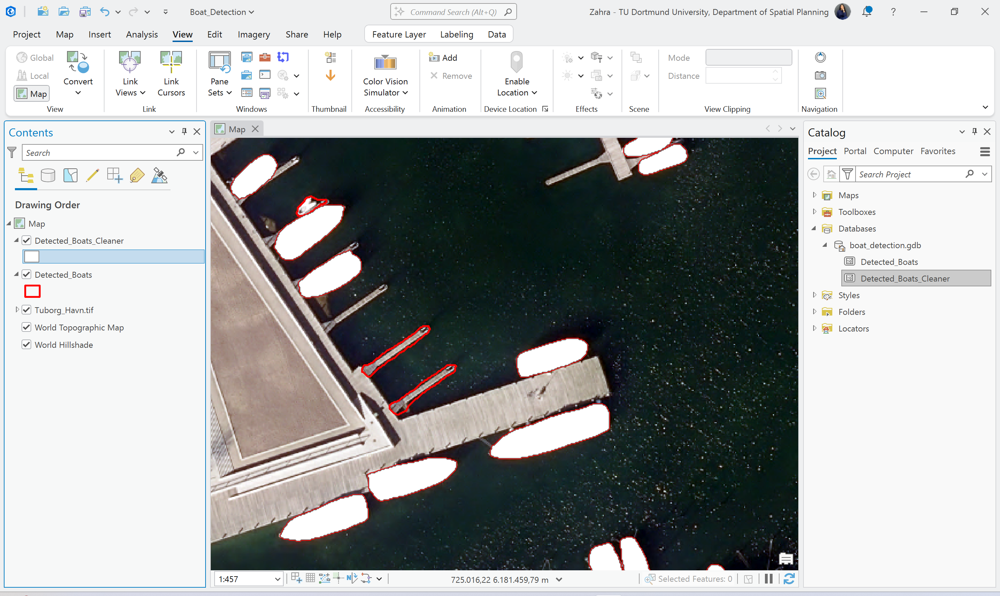

AI-Based Boat Detection (TextSAM)
Prompt-based object detection using the TextSAM deep learning model in ArcGIS Pro, including parameter tuning and post-processing to refine boat detection results from high-resolution aerial imagery.
Project Focus
This project demonstrates a GeoAI workflow for detecting boats from aerial imagery using the TextSAM pretrained model in ArcGIS Pro. The emphasis was not only on running model inference, but also on refining the output through parameter selection and attribute-based filtering to produce a cleaner GIS-ready result.
Software Skills Demonstrated
Prompt-Based Detection
- Used TextSAM for text-prompt object detection
- Defined the target object with the prompt “boat”
- Ran deep learning inference in ArcGIS Pro
Parameter Tuning
- Configured Non-Maximum Suppression (NMS)
- Reviewed confidence-based detections
- Adjusted filtering logic to improve output quality
Post-Processing
- Reduced false positives after initial detection
- Removed very small geometries from the output
- Refined polygons for cleaner GIS use
Web-Based Presentation
- Published final outputs as an interactive web app
- Organized results for visual comparison
- Presented workflow outputs in portfolio format
Tools & Environment
Core Software
- ArcGIS Pro
- ArcGIS Image Analyst
- ArcGIS Deep Learning Tools
Model & Data
- TextSAM pretrained model
- High-resolution RGB aerial imagery
- Vector polygon output generation
Workflow Summary
1. Input Imagery
High-resolution aerial imagery was loaded in ArcGIS Pro and reviewed as the base input for object detection in the marina environment.
2. Initial Detection
The Detect Objects Using Deep Learning tool was run with TextSAM using the text prompt “boat” to generate candidate detection polygons.
3. Output Refinement
Detection results were reviewed and filtered to remove false positives and very small geometries that reduced output quality.
4. Final Presentation
The cleaned output was prepared for interactive display in a web app to communicate the final result more clearly.
Key Parameters & Refinement Logic
This project also involved reviewing the initial model output and improving it through post-processing decisions rather than relying only on the raw detection result.
Detection Settings
- Text prompt: boat
- Prompt-based object detection workflow
- Polygon output generated from model inference
Refinement Strategy
- Applied NMS to reduce duplicate detections
- Reviewed confidence levels in the output
- Removed small false-positive geometries
Input Imagery
The workflow started with the source aerial image used for TextSAM inference. This image provided the visual basis for identifying boats as the target objects.

Initial Detection Result
The initial model output shows the raw boat detections generated with TextSAM before further filtering and refinement.

Refined Detection Output
After post-processing, the result became cleaner and more usable for GIS interpretation. The refined output reduces noise and better highlights the relevant detected boats.

Project Outcome
This project shows how a pretrained GeoAI model can be used beyond a simple tutorial workflow. It demonstrates prompt-based detection, parameter-aware output review, post-processing, and interactive result presentation in a portfolio-ready format.